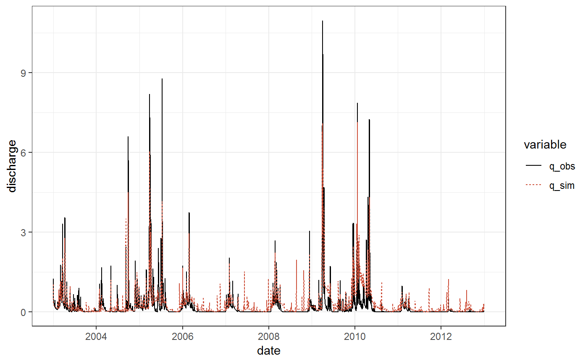
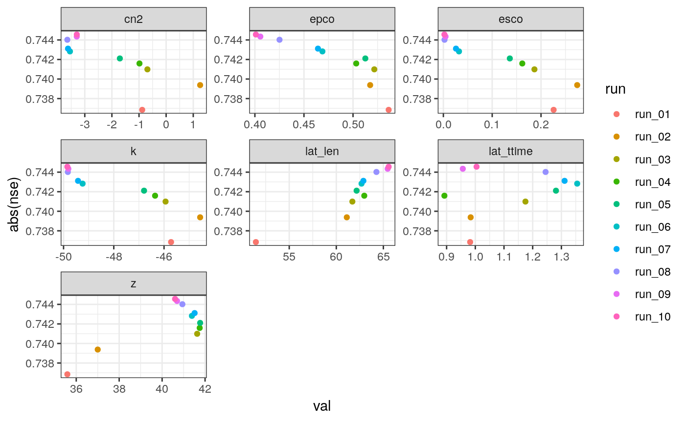
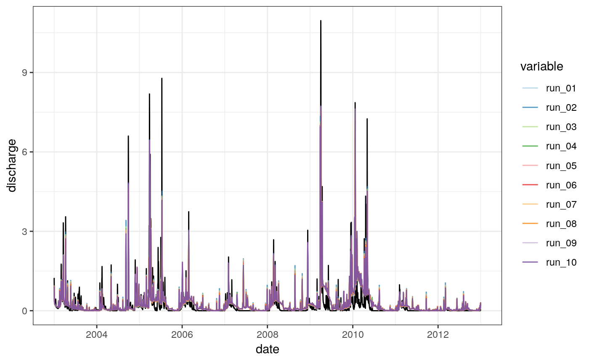

There are many optimization routines available in R. The base R package stats (R Core Team, 2019) provides the function optim() that offers several standard methods for model parameter optimization. The hydromad (Andrews and Guillaume, 2018) package provides a complete environment for hydrological modeling in R. It also offers several optimization algorithms that are standard methods in hydrological modeling, such as the Shuffled Complex Evolution algorithm (SCE; Duan et al., 1993), or the Dynamically Dimensioned Search algorithm (DDS; Tolson and Shoemaker, 2007). A flexible integration of the DDS algorithm for R can also be found on the following github repository (Bass, 2014). Multiple goodness-of-fit functions are available from literature to evaluate simulated time series with observed time series of that variable. The hydroGOF package (Mauricio Zambrano-Bigiarini, 2017) summarizes frequently used functions for the evaluation of time series of hydrological variables.
If you do not have installed any of the required R package, follow the instructions for the respective R package.
The hydromad package can be installed following the instructions on the hydromad website.
The other R packages are available from CRAN and can be installed with the following commands:
install.packages("hydroGOF")
install.packages("dplyr")
install.packages("lubridate")
install.packages("tidyr")
install.packages("ggplot2")The optimization example uses the SWAT+ demo project available from SWATplusR. The demo project is a simple model setup of a head watershed of the Little River Experimental Watershed (LREW; Bosch et al., 2007). You can load the to your hard drive as follows:
# The path where the SWAT demo project will be written
demo_path <- "Define:/your/path"
# Loading the SWAT+ demo project on your hard drive
path_plus <- load_demo(dataset = "project",
version = "plus",
path = demo_path,
revision = 57)SWATplusR also provides observation data of daily discharge records at the main outlet of the demo for the time period 1968-01-01 until 2012-12-31. We will use the observation data to evaluate the model in each optimization step. The model will be evaluated for the time period 2003-01-01 to 2012-12-31. Therefore, we load the demo data and limit it to this time period:
Most optimizers require a function as an input argument that uses a parameter set as input and returns a scalar value as a result. To use the run_swatplus() function in the optimization we wrap a function around the SWAT model execution that will be implemented in the optimizer to search the optimum parameter set that minimizes the return value (minimization is usually the default option in optimizers). An important side note for running SWAT+, the discharge is written in \(ha \cdot m \cdot day{-1}\) (in our case it is day!). A conversion to \(m^{3} \cdot s^{-1}\) requires to devide by \(8.64\). Below you see how you can implement the model execution into a function that can be optimized:
swat_model <- function(par) {
run_swatplus(project_path = path_plus,
output = list(q_sim = define_output(file = "channel",
variable = "flo_out",
unit = 1)),
parameter = par,
start_date = "2000-01-01",
end_date = "2012-12-31",
years_skip = 3,
quiet = TRUE)
}
swat_optim <- function(par, obs) {
q_sim <- swat_model(par)
nse_q <- - NSE(q_sim$simulation$q_sim/8.64, obs)
return(nse_q)
}We defined a function that has one input argument par that is the named parameter vector that will be passed to run_swatplus(). The simulation will return the discharge at the main outlet (unit = 1) for the time period 2003-01-01 to 2012-12-31 (considering the years_skip = 3 as warm up period). In this case we set the function to be quiet = TRUE. In a next step the function uses the observed discharge values from q_obs$discharge for the same period and evaluate the simulated discharges using the Nash Sutcliffe Efficiency criterion (Nash and Sutcliffe, 1970) that is available with the function NSE() from the package hydroGOF that is then returned as a single value. You can see that we implemented the negative NSE as we will minimize with optim()
optim
The optim() function provides several optimization routines (see the ‘Details’ section in the R help file). Most of the offered algorithms, however, do not provide the option to define parameter boundaries. Though, constraining SWAT model parameters is essential as these are bound in the model. The method = 'L-BFGS-B' implements a ‘quasi-Newton’ method according to Byrd et al. (1995) and allows to define parameter boundaries.
In the optimization example we will use 7 parameters that are frequently used for model calibration with respect to simulated discharge. The optim function requires starting values (par_init) and in the case of method = 'L-BFGS-B' we can also define upper (par_upr) and lower (par_lwr) boundaries for the parameters to optimize. We name the parameter sets using the syntax for SWAT model parameters that is required for the run_swat*() functions (see the Get started section on ‘Model parameter alteration’ to learn more on parameter names):
par_names <- c("cn2.hru | change = abschg",
"lat_ttime.hru | change = absval",
"lat_len.hru | change = absval",
"k.sol | change = pctchg",
"z.sol | change = pctchg",
"epco.hru | change = absval",
"esco.hru | change = absval")
par_init <- c(0, 3, 50, 0 , 0, 0.5, 0.5)
par_lwr <- c(-15, 0.5, 10, -50, -50, 0, 0)
par_upr <- c( 10, 50, 100, 50, 50, 1, 1)
names(par_init) <- par_names
names(par_lwr) <- par_names
names(par_upr) <- par_namesThe defined optimization function swat_optim() can now be implemented in the algorithm as follows:
opt_bfgs <- optim(par = par_init, fn = swat_optim, method = "L-BFGS-B",
lower = par_lwr, upper = par_upr, obs = q_obs$discharge,
control = list(maxit = 100))We omitted any feedback of the optimization in that case. If you want to get some feedback of the optimization routine you can set the control parameter trace = 6 in the list of control parameters above. The result of the optimization is saved in a list object. Relevant information is given by the list entries opt_bfgs$par that provides the final optimum parameter set and opt_bfgs$value that shows the optimized objective criterion, in our case the NSE:
opt_bfgs$par
#> cn2.hru | change = abschg lat_ttime.hru | change = absval
#> 0.021059868 1.025319757
#> lat_len.hru | change = absval k.sol | change = pctchg
#> 50.000004863 0.006688686
#> z.sol | change = pctchg epco.hru | change = absval
#> 0.004704069 0.460747484
#> esco.hru | change = absval
#> 0.494337978
opt_bfgs$value
#> [1] -0.7217028To visualize the discharge time series with the found parameter set we have to rerun the swat_model() we defined above with the optimum parameter set:
q_bfgs <- swat_model(opt_bfgs$par)We will visualize the simulation with the optimized parameter set together with the observed discharge. We prepare our data with dplyr (Wickham et al., 2019) and tidyr (Wickham and Henry, 2018) and plot it with ggplot2:
q_plot <- q_bfgs$simulation %>%
mutate(q_sim = q_sim/8.64) %>%
left_join(., q_obs, by = "date") %>%
rename(q_obs = discharge) %>%
gather(., key = "variable", value = "discharge", -date)
ggplot(data = q_plot) +
geom_line(aes(x = date, y = discharge, col = variable, lty = variable)) +
scale_color_manual(values = c("black", "tomato3")) +
theme_bw()
SCEoptim()
The implementation of the SCE algorithm provided by hydromad with the function SCEoptim() follows an almost identical syntax as the optim() function. Therefore, we can perform the optimization in almost the same manner as above. In SCEoptim() we will add however a few control arguments to define some settings in the optimization, such as the relative tolerance reltol = 0.001 that is used to stop the optimization when the improvements in NSE are below the threshold, tolsteps = 3 to stop after the third time the improvement in NSE was below the threshold, and trace = 1 to get feedback from each optimization cycle. The optimization run looks as follows:
opt_sce <- SCEoptim(swat_optim, par_init, lower = par_lwr, upper = par_upr,
control = list(reltol = 10^(-3), tolsteps = 3, trace = 1))
#> Nr Iter Nr Fun Eval Current best function Current worst function
#> 1 391 -0.736847 497.542
#> 2 610 -0.73938 497.542
#> 3 888 -0.740991 497.542
#> 4 1230 -0.741591 497.542
#> 5 1532 -0.742106 497.542
#> 6 1718 -0.742826 497.542
#> 7 1882 -0.743112 497.542
#> 8 2061 -0.744018 497.542
#> 9 2272 -0.744347 497.542
#> 10 2476 -0.744557 497.542The optimization result with SCEoptim() provides more detailed information compared to optim(), such as the best parameter set of each iteration step. In our example you can see that all ten simulations actually resulted in almost the same model performance, a look at the respective parameter sets shows however, that some parameters strongly vary between these results. Therefore, it can be interesting to have a look on all ten simulation results. The best parameter set for each iteration step is saved in the variable opt_sce$BESTMEM.ALL. We will write them in a tibble (Müller and Wickham, 2019) to use them in our simulations. In a next step we can run the SWAT+ model with these ten parameter sets. We will use parallel computing here to have shorter computation times:
par_best <- as_tibble(opt_sce$BESTMEM.ALL)
q_sce <- run_swatplus(project_path = plus_path,
output = list(q_sim = define_output(file = "channel",
variable = "flo_out",
unit = 1)),
parameter = par_best,
start_date = "2000-01-01",
end_date = "2012-12-31",
years_skip = 3,
n_thread = 4)
#> Building 4 threads in 'Define:/your/path/swatplus_demo/.model_run':
#> Completed 4 threads in 0S
#> Performing 10 simulations on 4 cores:
#> Completed 10 simulations in 8STo see the distribution of the parameters we first create dotty plots. To do that we have to add the optimized NSE values to the parameter table par_best. After that we agin transform our data and plot with ggpot2:
par_plot <- q_sce$parameter$values %>%
mutate(nse = apply(opt_sce$POP.FIT.ALL, 1, min),
run = paste0("run_", sprintf("%02d", 1:10))) %>%
gather(key = "par", value = "val", -nse, -run)
ggplot(par_plot) +
geom_point(aes(x = val, y = abs(nse), col = run)) +
facet_wrap(.~par, scales = "free") +
theme_bw()
The time series of the simulated discharges are plotted similarly to the plot for the results of otim(). Though, some modifications were necessary in the data preparation and the plot command itself to plot all ten simulations:
sce_plot <- q_sce$simulation$q_sim %>%
mutate_if(is.numeric, list(~./8.64)) %>%
gather(., key = "variable", value = "discharge", -date)
obs_plot <- rename(q_obs, q_obs = discharge)
ggplot() +
geom_line(data = obs_plot, aes(x = date, y = q_obs), col = "black") +
geom_line(data = sce_plot,
aes(x = date, y = discharge, col = variable), alpha = 0.75) +
scale_color_brewer(palette = "Paired") +
ylab("discharge") +
theme_bw()
Andrews, F. and Guillaume, J.: Hydromad: Hydrological model assessment and development. [online] Available from: http://hydromad.catchment.org/ (Accessed 5 March 2019), 2018.
Bass, B.: Tolson & Shoemaker’s DDS Algorithm implementation in R. [online] Available from: https://github.com/bdb67/Dynamically-Dimensioned-Search (Accessed 19 March 2019), 2014.
Bosch, D. D., Sheridan, J. M., Lowrance, R. R., Hubbard, R. K., Strickland, T. C., Feyereisen, G. W. and Sullivan, D. G.: Little river experimental watershed database, Water Resources Research, 43(9), doi:10.1029/2006wr005844, 2007.
Byrd, R. H., Lu, P., Nocedal, J. and Zhu, C.: A limited memory algorithm for bound constrained optimization, SIAM Journal on Scientific Computing, 16(5), 1190–1208, doi:10.1137/0916069, 1995.
Duan, Q. Y., Gupta, V. K. and Sorooshian, S.: Shuffled complex evolution approach for effective and efficient global minimization, Journal of Optimization Theory and Applications, 76(3), 501–521, doi:10.1007/bf00939380, 1993.
Mauricio Zambrano-Bigiarini: HydroGOF: Goodness-of-fit functions for comparison of simulated and observed hydrological time series., 2017.
Müller, K. and Wickham, H.: Tibble: Simple data frames. [online] Available from: https://CRAN.R-project.org/package=tibble (Accessed 5 March 2019), 2019.
Nash, J. E. and Sutcliffe, J. V.: River flow forecasting through conceptual models part I - A discussion of principles, Journal of Hydrology, 10(3), 282–290, doi:10.1016/0022-1694(70)90255-6, 1970.
R Core Team: R: A language and environment for statistical computing., [online] Available from: https://www.r-project.org/ (Accessed 5 March 2019), 2019.
Tolson, B. A. and Shoemaker, C. A.: Dynamically dimensioned search algorithm for computationally efficient watershed model calibration, Water Resources Research, 43(1), doi:10.1029/2005wr004723, 2007.
Wickham, H. and Henry, L.: Tidyr: Easily tidy data with ’spread()’ and ’gather()’ functions. [online] Available from: https://CRAN.R-project.org/package=tidyr (Accessed 3 May 2019), 2018.
Wickham, H., François, R., Henry, L. and Müller, K.: Dplyr: A grammar of data manipulation. [online] Available from: https://CRAN.R-project.org/package=dplyr (Accessed 5 March 2019), 2019.